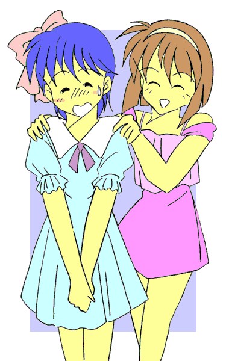

｢真奈美ちゃんって…………いいわねぇ〜｣
……ピクッ！！
その言葉に、俺のこめかみがヒクついた。
｢……何がだ？ 礼戸｣
俺はできるだけ突き放すような感じで、俺の隣に立っている美少女（？）に答えた。
言っておくが俺は「真奈美」なんて名前じゃない！！ だが、こいつが俺に対して声をかけてきたのは明らかだった。
そしてからかいの意図を持っていることも……
｢だってさ、真奈美ちゃんって体の線がやわらかくってさ、胸は大きいし腰は細く括れてるし、女の子らしくっていいわねえ……って｣
……ピクピクッ！！
俺のこめかみのヒクつきは、さらに大きくなった。｢……お、『女の子らしさ』では君に負けるよ、か・ず・あ・き・くんっ｣
「いやねぇ、今はその名前で呼ばないで。真奈美ちゃんも喋り方を女の子らしくしないとモテないわよ。……ね、『あたし』って言ってみて♪」
ブチッ・・・！！！！
｢好き放題言いやがってこの野郎っ！！
・・・お前なんか、変身したままずっと女の子でいればいいんだあっ！！｣
｢あの｣事件が起きたのは、それから数日後だった……
変身美少女戦士ミラージュガール
第五話：逆転？反転？本日は性転なり！？
作：ライターマン
俺の名前は三代武士（みしろ･たけし）。１３歳だけど、夏休みが明けて９月になると１４歳になる。
４月に私立津留木（つるぎ）学園に転校してきた中学二年生で、名前と一人称の｢俺｣という言葉でも分かるように、俺はれっきとした男である。
その俺にはちょっとした秘密がある。邪霊界からやってくる魔物と戦うため、正義の美少女戦士ミラージュガールに変身しているのである。
男なのに美少女戦士はおかしいって？ ところが俺の場合、変身すると体が女の子に変化してしまうのだ。
事の起こりは俺の家族がここ新間（しんま）市に引っ越してきた日、母さんが昔使っていた変身ブローチを見つけたことだった。
２０数年前に美少女戦士だったという母さんの話を半信半疑（……というよりほとんど全疑）で聞いていた俺だったが、その時突然ブローチの力が発動してしまったのだ。
俺の身体はみるみるうちに女の子に変化していき、俺は白き光の美少女戦士ミラージュホワイトに、｢レジスト｣されてしまった――
精霊界から来た妖精ペルティノことペルの話では、母さんたちが閉じた筈の邪霊界からの｢扉｣が再び開いて、魔物がこの世界に侵入できるようになったと言うのだ。
そしてその際、奴らが何らかの結界をこの世界と精霊界との間に張ったため、新たな変身ブローチとともにこの世界を訪れようとしたペルは、その結界のためにダメージを受けてしまった。
ペル自身は何とか無事だったものの、持ってきたブローチが砕けて使えなくなってしまったため、精霊界では記念品となっていた母さんたちのブローチの力を復活させた。しかしその力が微妙に変質したらしく、本来女の子にしか働かない筈のブローチの力が、俺に対して発動したらしい。
何にしても俺がミラージュホワイトにレジストされてしまった以上、俺は美少女戦士として戦わなければならなくなったのだ。
レジストをキャンセルする事も出来るんだけど、多大な犠牲（……）を伴うことになるので、俺は断っている。
そして驚くべき事に、俺以外の二人のミラージュガールも実は男だったのだ。
一人は俺のクラスメイトで、青き水の美少女戦士ミラージュブルーに変身する、古木祐一（ふるき･ゆういち）。
最初の頃はお互いの正体が分からず、それが判明したときは両方ともかなりの衝撃を受けたものだが、今では結構仲のいい友人として付き合っている。
もう一人は、赤き炎の美少女戦士ミラージュレッドに変身する、礼戸一明（れいと･かずあき）。
こいつの場合、趣味で時々女装する事があり、ミラージュガールへの変身も楽しんでいる節がある。最初に俺と古木がこいつと出会った頃も、こいつは女の子（それもそれなりの美少女）の姿で現われて一騒動を起こしたのだが……あまり思い出したくないのでここでは省略する。
古木と礼戸の場合、変身を解除すればすぐにもとの男に戻れるのだから、まだましな方だろう。
だけど俺だけは、変身を解除しても何故か１０時間は女の子の身体のままなのである。
そのため学校に行くときや外出するときは、変身解除後に着るための着替え（しかも女物……）をいつも持ち歩かないといけなくなってしまった。
男の俺が女の子の下着や服を持ち歩くのなんて恥ずかしかったし……もちろんそれに着替えなければならないときは、もっと恥ずかしい。
そして着替えた後は、しばらく女の子として過ごさなければならない。
母さんは女の子になった俺を「真奈美」と呼んで楽しんでるようだったが、俺としてはさっさと邪霊界との｢扉｣を閉じて、女の子にならずにすむようになりたいと願っている。
｢合体技！？｣
｢はい。この前の魔人との戦いでは武士さんの必殺技を打ち込んだにもかかわらず、あの魔人には通用しませんでした。……そこで対抗策の一つとして、三人の力を一つにして相手にぶつけるという訳です｣
俺たち三人を前にして、犬の姿のペルがミラージュガールのパワーアップについて説明を始めた。
夏休みに入って間もない頃、俺たちはそれまでの魔獣とは比べ物にならない強さの｢魔人｣と戦った。
今までの俺たちの力や戦い方では魔人に対抗できないと判断したペルは、精霊界と連絡をとって検討し、一つの方法が示された訳である。
｢ふーん、なんか『大極破』みたいだな……｣
｢バカ、あれは二人だろ｣
漫画のネタでボケる礼戸に、俺が突っ込む。
お互いこの手のネタは好きなので、こう言った類の会話をよくするのだが……それにしても古いネタである。
｢とにかくっ！！ 三人の力を一ヶ所に集めて高速で回転させます。そしてミラージュホワイトがそれを受け取って相手に投げつけてください。……相手は三つの異なる力を連続して受けることになり、三倍プラスアルファのダメージを与えられるはずです｣
｢ふーん。……ところで、どうして力を受け取り相手にぶつけるのが俺なんだ？｣
｢受け取る段階で三つの力を同時に制御しなければならず、強い精神力が必要だからです。そしてこの中では、拳法の修行をした武士さんが最も適しているからです｣
｢……なるほど、確かに精神のコントロールに関しては、三代が一番適してるよな――｣
ペルの答えを聞いた礼戸は、納得したように頷いた。
｢それじゃあ実際に試してみますので、皆さん変身してください｣
ペルの言葉に俺たちはポケットからそれぞれのブローチを取り出した。
そして変身のためのキーワードを唱える。
｢｢｢ミラージュマジック ･
ミラクルチャージ！！｣｣｣
するとブローチが光り出し、続いて俺たちの衣服が光の粒子に変わっていく。
光の粒子はそれぞれの周りを回り出し、裸の状態の俺たちは光に包まれた。
光に包まれた俺の身体が徐々に変化していく。
髪がサラサラになって長くなり、腰のあたりまで伸びていく。
肌が白くなり、指や腕、それに足がスラリと細くなっていく。
腰の部分が大きくなり、逆にウエストの部分が細く括れていく。
そして胸の部分が少しずつ膨らみ、やがて二つの丸い塊になる。
身体の変化が終わると、俺を囲んでいた光の粒子が集まり始める。やがてそれらは光沢のある白い生地で出来た服とミニスカート、手袋、ブーツ、ヘアバンドになって俺の身体を包み、そしてブローチが胸の中心に固定された。
変身を終えた俺の姿は、腰まで届く長い髪をなびかせた女の子になっていた。他の二人は髪の伸びはわずかだけど、髪型や顔つきを含めたその姿は完全に女の子になっていた。
｢……じゃあ、いくぞ｣
俺の言葉にブルーとレッドの二人が頷いた。
俺たちは正三角形の頂点の位置に立つと、中心に向かって両腕を前に突き出した。
精神を集中すると、両方の掌の間にそれぞれ白、青、赤の光が生じた。
光はやがてひとつに集まり、三角形の中心の位置で扇風機の羽のように高速で回転を始めた。
｢ホワイト。その光を受け取って目標に向かって投げてください｣
｢お、おう｣
ペルの指示に従って、俺は前に進み出ると、バスケットボールよりも一回り大きい光の集合体を両手で包み込むようにして保持しようとした。
光の集合体は俺の両手の中で暴れまわり、今にも飛び出しそうな勢いだった。
「く……っ！」
俺はさらに精神を集中して、その動きをコントロールしようとした。……そして回転が安定したところで、ライトニングスマッシュと同じようにそれを右手に移した。
｢いくぞ……ミラージュハリケーン！！｣
俺の声と共に放たれた光の集合体は、標的に向かって飛び出した。……が、
ドンッ！！！
手から離れたとたん制御不能になったそれは、次の瞬間爆音と共に四散し……俺たちは光のエネルギーと衝撃波に吹き飛ばされた。
｢武士さん……武士さん！！｣
気を失っていた俺は、ペルの声でようやく目が覚めた。
｢う……うう……ペ、ペルか？｣
｢大丈夫ですか武士さん？ ……そ、その……身体の方は……何ともないですか？｣
ペルが俺に体の具合を聞いてくる……が、その様子は何となくうろたえてるみたいだった。
｢身体の方？ 別に何とも…………えっ！？｣
体のあちこちを点検してどこも変わったところがないのを確認した俺だったが、あることに気がついて驚きの声を上げた。
そう、俺の身体はどこも変わっていなかった。変身前と同じ服装、そして変身前と同じ男の身体……
｢どういうことだペル？ 俺はまだ変身を解除していないはずだぞ。それに男の身体に戻ってるなんて――｣
俺はペルを問い詰めた。
｢分かりません。おそらくあの爆発による衝撃波とエネルギーで、武士さんを変身させていた強制力が弾き出されて変身が強制解除されたと思うんですが……それよりも問題は……｣
そう言ってペルは横を向いた。その視線の先には、古木と礼戸の二人がやはり変身を解除した状態で倒れていた。
｢おいっ！！ 古木、礼戸、大丈夫か！？ ……って何だこれは！？ ……まさか！？｣
二人を起こそうとした俺は、驚愕のあまり目を見開いた！！
仰向けに倒れていた古木と礼戸。その胸には、男にはないはずの双丘の膨らみが確かに存在していた……
｢どう、似合う？ ねえ祐美子ちゃんも着替えてみたら？｣
ピンクのワンピースを着た礼戸が、俺と古木に微笑みかけた。
こいつは以前から女装して楽しんでいる奴だったが、今は身体が女の子になっているので、薄手でかなり肌の露出している夏用の服を着ていた。
｢ゆ、祐美子ちゃんって……｣
古木は礼戸の言葉に、顔を真っ赤にした。
｢あら、今は女の子なんだからそれにふさわしい名前にしなきゃ。……ちなみにあたしの事は『明菜』って呼んでね｣
そう言って明菜……もとい礼戸は店の売り場へと戻っていく。
ここは礼戸のお母さん――つまり弥生さんが経営しているブティック｢Ｍｉｒａｇｅ｣。
あの後、古木と礼戸を起こした俺は、大急ぎで二人のお母さんに連絡を取った。
古木のお母さんの美鈴さんには医者として二人の身体を診てもらうために、そして弥生さんには二人の着替えを持ってきてもらうためにである。
俺の持っていた着替えは一人分だったし、胸のサイズが大きかったので没になった。
｢……で、どうだったんだ診察の結果は？｣
俺は顔を少し赤くして古木に尋ねた。本来だったら女の子に、こんな事は聞くべきじゃないんだろうけど……
｢う、うん……母さんの話だと詳しくは病院で調べないと分からないけど、外見上は完全に女の子だって｣
やはり顔を真っ赤にして古木が答えた。
古木の服装は変身前と同じ物だが、下着は弥生さんからブラジャーとショーツをもらって身に着けてる。
今までは変身して戦ってるときだけ女の子だったから、そんなに意識してなかったろうけど、こうしてじっくりと女の子の身体を感じ、女の子として見られているのは相当に恥ずかしいのだろう。
｢ねえ祐美子ちゃん、これ着てみない？｣
そんな古木の心情を知ってか知らずか、礼戸が水色のワンピースを持ってきた。やはり夏用らしく、しかもスカート部分はミニである。
｢そ、そんな……ぼ、僕がスカートなんて――｣
｢……おい礼戸、お前事態がちゃんと分かってるのか？｣
狼狽する古木を見て、俺は礼戸をたしなめた。
だが礼戸はひるむことなくニヤリと笑うと、
｢分かってるわよ。お互いもうしばらくしたら元に戻る可能性が高いでしょう？ だったら今のうちに楽しんだ方が得じゃない？｣
｢……え？ しばらくしたら元に戻るって？｣
｢だって三代君が男に戻ってあたしたちが女の子のままって事は、三代君の中に残ってた力が爆発の影響であたしたちに移ったということでしょ？ だったら１０時間後……いえ二人に半分ずつ移ったとしたら、５時間後には元に戻るということじゃないかしら？｣
｢あ……そう言われれば――｣
確かにそうである。俺が変身解除後すぐに男に戻って、二人が女の子のままということから考えると、礼戸の推測は正しいように思えた。
｢……ねっ、そういうことだから一緒に楽しみましょ？｣
そう言って礼戸は古木の手を引っ張って、試着室の方へ引っ張っていった。
｢ち、ちょっと！！ 三代君助けてよ！！｣
｢……古木、諦めて少しの間だけ付き合ってやれ。……ま、そういうことなら仕方ないか｣
そう言って俺が肩を竦めると、さすがの弥生さんも少し困ったような顔をしながら笑みを浮かべていた。

だが……礼戸の推測は大きく外れた。
５時間が経ち、１０時間が経過しても……それどころか翌日になっても二人は女の子のままだったのである。
そして３日目――
｢女性化が進行している！？｣
美鈴さんから二人の状態を聞いた俺は、その内容に衝撃を受けてしまった。
｢……そうよ。昨日と今日の検査結果を比較して分かったの。まず身体のサイズだけど、二人の体型が少しずつ変化しているわ。ウエストは細く、バストとヒップは逆に大きくなっているの｣
｢それって測定誤差じゃあ……｣
｢３回測っての平均だから、それはないわね。次に内臓、それも女性特有の器官の状態なんだけど……｣
１３歳の男子中学生である俺が聞いていたためか、言葉を濁していたけど……俺には何となく想像がついた。
｢こちらの方も成長しているわ。昨日まではせいぜい６歳程度の大きさだったのが、今日は８歳程度になってるわ。このままだと歳相応にまで成長するのも時間の問題ね｣
｢元に戻る可能性はないの？｣
俺の隣に座っている母さんが尋ねた。
｢分からないわ。今のところ男性に戻る傾向は見られないけど、何かがきっかけで戻る可能性はあるわ。……ただこれは魔法に近いものだから、医者の私にはさっぱりよっ｣
そう言って美鈴さんはため息を吐くと、両手を上に挙げた。
その日、俺は二人に何となく顔を会わせづらくなって、そのまま母さんと家に帰った。
４日目――
ピンポーン。
『……誰？』
チャイムを押してしばらくした頃、インターホンから聞こえてきたのは聞き慣れた筈の声……
しかし今その声のトーンは、高く澄んだソプラノになっていた。
｢あ、あの……俺、三代だけど……よかったら入れてくれないか？｣
しばらくの沈黙のあと、玄関が開き、『……どうぞ』 と声がしたので、俺は家の中に上がり、古木の部屋のドアを開けた。
部屋の中は甘い香りが漂っていた。……やはり、体臭も女の子のものに変わってきているのだろうか。
自分が女の子である事を意識しないためにだろうか、古木はＴシャツに体操服のジャージという格好だった。それでも胸の膨らみを含めた身体のライン、そしてうっすらと浮かんだブラジャーが古木が女性である事を物語っていた。
自分でも気がつかないうちに、心臓がドキドキと高鳴っていた。
｢まあ、椅子にでも座ってよ……｣
古木に進められて俺は椅子に腰掛けた。
｢よ、よう……元気か？ ……そ、その……身体の調子、は？｣
何となく落ち着かなくなった俺が、ぎこちなくそう尋ねると、古木はその顔に苦笑いを浮かべた。
｢相変わらずだよ。身体のサイズとかは変わらなくなったけど、内側の変化は進行してるって母さんが言ってた｣
｢そうか……｣
｢母さんが、『２学期からは女の子として学校に通うことになるかも』って……でも、男だった僕がいきなり女の子の格好をしても、絶対似合わないよ｣
｢そ、そんな事ないよ。今の古木なら十分女の子としてやっていけるよ。……そ、それに世の中の半分は女なんだし、女の子として生きていくのもそう悪いことじゃないさ｣
｢…………それ、全然慰めになってない｣
｢ご、ごめん……｣
｢礼戸君……どうしてる？｣
気まずさにしばらく黙っていた俺たちだったが、古木が再び口を開いた。
｢ああ……後で行くつもりでいるんだが……やっぱり引き篭もっているそうだ――｣
｢そう……｣
｢……それがさ、あいつが言うには『女装はたまにするから楽しいんだ。ずっと女の子のままじゃ全然楽しくない』んだと。……全くふざけた話だよな｣
俺はそう言って無理矢理笑って見せた。
古木の表情は相変わらずだった。｢そうかも……でも原因はそれだけじゃないと思う｣
｢どういうことだ？｣
｢昨日病院から帰ってくる途中で、クラブ活動から帰るうちの学校の女の子たちとすれ違ったんだ。……で、その制服を見てるうちに、僕思ったんだ……『あの制服、着てみたいな』って……｣
｢それって……｣
｢僕……ううん、多分礼戸君も、身体だけじゃなく心まで女の子になってきてるんだ。夜なんか用意された女の子の服をこっそり着て、鏡の前でポーズを取ってるし…………それに今、自分の事を『僕』って言ってるけど、なんか違和感を感じてる…………｣
｢古木……｣
｢あたし……僕、恐いよ。……自分が自分でなくなるみたい。男の僕が消えて、全然別の女の子に身体を乗っ取られるみたいで……｣
古木の体は小刻みに震えていた。目に涙を浮かべ、すがるような表情で俺を見ていた。
｢助けて……三代君……｣
その言葉を聞いた次の瞬間、俺は古木の身体を抱きしめていた。
細く、柔らかい女の子の身体……折れてしまいそうなその身体を俺は力いっぱい抱きしめた。
｢……心配するな。元に戻る方法は必ずあるはずだ。万一戻れなかったとしても……そのときは俺がお前を守ってやる！！｣
｢三代君……｣
｢たとえ心まで女の子になったとしても、お前はお前だ……だから安心しろ……どんなときでも俺がそばにいてやるから……｣
｢うん……わかった｣
そう言って古木は涙を拭いて微笑むと、そっと目を閉じた。
（…………なんか状況に流されてるような気もするけど……まあいいか）
そんな事を考えつつ、俺は古木の唇に自分の唇を重ねようとした。……だが、
ガバッ！！
俺はそれに気づいて、慌てて古木から離れた。
｢……どうしたの、三代君？｣
｢お前、自分の身体を見てみろ！！｣
｢え？ ……あ、身体が光ってる？｣
｢同じだ。俺の身体が男に戻るときと……｣
｢じゃあ……｣
｢戻るんだよ！！ 男の身体に戻る事が出来るんだよ！！｣
そして、実際にその言葉どおりになった。
俺のときよりも数倍眩しい光を発しながら、古木の体は元に戻っていった。
どうやら俺が強く抱きしめる事が、古木の中に移っていた強制力を外に出すきっかけになったらしい。
身体が戻ると同時に精神の女性化も消えてしまい、古木は完全に元に戻った。
俺と古木は、抱きしめた後の行為については今後絶対に触れないと約束して……礼戸の家へ直行した。
そして俺が礼戸の身体を強く抱きしめると、礼戸の身体も光を発して元へと戻っていった。
｢……一体どういうことかしら？｣
自分の息子が男に戻ったのを確認した弥生さんは、お茶を飲みながら、やはり連絡を受けて駆けつけた美鈴さんに尋ねた。
｢さあ……これは推測なんだけど、例の爆発で武士君の身体にあった何らかの力が、祐一と一明君に移ったのは確かなようね。……ただ、その力は武士君の身体の中にある場合は発散消滅するけど、二人の身体にある場合だと蓄積増大するみたいね｣
｢じゃあ、武士君が抱きしめる事によって元に戻ったのは？｣
｢武士君が身体を密着させる事によって、力が自分のいるべき場所を見つけてそこに戻っていった……そんなところかしらね｣
｢そんなものかしら？ ……でもまあ、これで二人とも元に戻ってめでたしめでたしね｣
｢ちっともめでたくないわよ！！｣
弥生さんと美鈴さんがにこやかに微笑んで会話をしているところへ、俺は大声で割り込んだ。
｢古木君と礼戸君が男の子に戻ったのはいいことよ。……でもなんで二人が元に戻った途端、あたしが女の子にならないといけないのよ！？ おまけに喋り方まで女言葉になってるしっ！！｣
｢力があるべきところに戻ったんだから、いつものように女の子になっただけでしょう？ ……二人の中で蓄積増大した分だけ、言葉遣いとかに影響が出てるみたいだけど｣
｢でも、これだけ増大した力が二人分だと、武士君の身体が完全に変わってもう元に戻れない可能性もあるんじゃない？｣
｢……それは十分にあるわね｣
｢そんなのいやぁぁぁ――――っ！！｣
｢み、三代さん……｣
泣き叫ぶ俺の横から、古木が遠慮がちに声をかけてきた。｢そ、その……今の三代さんって可愛いから十分女の子としてやっていけるよ。……それに世の中の半分は女だから、女の子として生きていくのもそう悪いことじゃ――｣
｢・・・それ、慰めになってないわよっ！！｣
結局１０時間後、俺の身体は（口調も含めて）男に戻ったが、俺はペルにあの合体技をもう二度と使わない事を宣言した。
……あんな騒ぎはもうこりごりである。
（おわり）
おことわり
この物語はフィクションです。劇中に出てくる人物、団体は全て架空の物で実在の物とは何の関係もありません。
あとがき
どうも、ライターマンです。
ミラージュガール第五話どうでした？
この話、実は｢一回でもいいから古木くんと礼戸の奴に、『変身後１０時間女の子なりっぱなし』をやってもらって、武士くんの苦労（笑）を分かち合ってもらいたい｣というリクエスト（？）を見たのがそもそものきっかけでした。
で、｢古木はともかく礼戸はいつ戻るか分からない状態にでもならないと全然平気だろう｣ということになり、ついでに精神の女性化ネタも加えてみました。
でもよく見ると着替えシーンがほとんどなくて萌えに乏しいかも……
次回はいよいよ魔人が再登場！！ 対するミラージュガールのパワーアップは？ってな感じの話にしたいと思います。
（しまった、このままじゃやっぱり萌えが少ない。こっちの強化も考えないと）
それではまた。
戻る
□ 感想はこちらに □